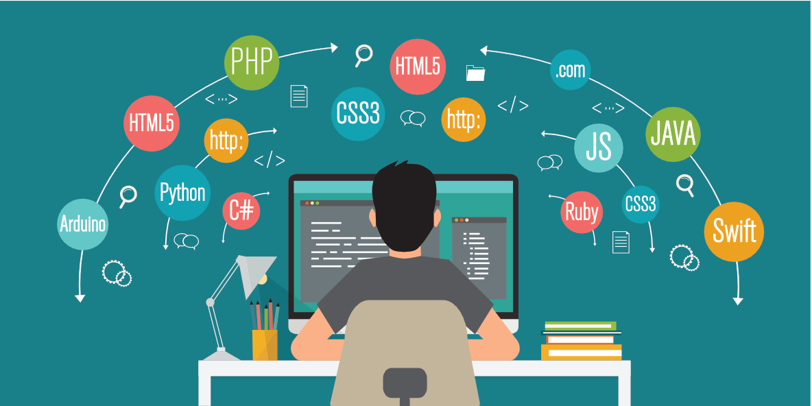

Jak se naučit programovat?
Začátek programování může být vzrušující, ale také může působit zmateně.
Následuje postup, jak začít s programováním:
- Vyberte programovací jazyk: Existuje mnoho programovacích jazyků, jako jsou Python, Java, JavaScript, C++, C#, Ruby, a další.
Pro začátečníky je často doporučován jazyk Python pro svou jednoduchost a přívětivost. Vyberte jazyk, který vás zaujme a odpovídá vašim cílům.
- Naučte se základy: Najděte kvalitní online zdroje nebo knihy, které vás provedou základy daného programovacího jazyka.
Zkuste porozumět základním konceptům, jako jsou proměnné, podmínky, smyčky, funkce a další.
- Experimentujte s kódem: Naučte se, jak psát jednoduché kódy a zkoumejte, jak fungují.
Začněte s malými projekty, jako je například program na výpočet součtu čísel nebo jednoduchý seznam úkolů.
- Praxe dělá mistra: Pravidelně programujte a pracujte na různých úkolech.
Opakování je klíčem k zapamatování a zdokonalení dovedností v programování.
- Vyberte si projekty: Když se cítíte pohodlněji s programováním, vyberte si projekty, které vás zajímají a které vám poskytnou výzvu.
Můžete například vytvořit webovou stránku, jednoduchou aplikaci, nebo automatizovat nějaký úkol.
- Učte se od ostatních: Zapojte se do online programátorských komunit, jako jsou fóra, diskusní skupiny nebo sociální sítě.
Tím získáte přístup k užitečným zdrojům, radám a podpoře od zkušenějších programátorů.
- Nebojte se chyb: Programování zahrnuje i chyby a neúspěchy. Nebojte se udělat chybu, protože to je součástí učení.
Analyzujte chyby a zkuste pochopit, co bylo špatně, abyste se zlepšili.
- Sledujte trendy: Programovací svět je neustále v pohybu, a tak sledujte trendy, novinky a nové technologie v oboru.
Naučte se nové nástroje, knihovny a frameworky, které mohou zefektivnit váš vývoj.
- Pravidelně si odpočívejte: Programování může být náročné, a proto je důležité pravidelně si odpočinout a vybalancovat svůj čas. Hlavně na začátku se nepřepalujte a dávejte si dostatek času na odpočinek.
- Nikdy neztrácejte motivaci: Naučení se programovat může být někdy náročné, ale pokud zůstanete motivovaní a vytrvalí, budete schopni dosáhnout svých cílů. Nenechte se odradit překážkami a buďte trpěliví.
Začátek programování může být výzvou, ale je to také zábavná a kreativní činnost. Držte se těchto tipů a především si užijte proces učení a objevování nových dovedností.

Kontakt
Vyhledávač Google